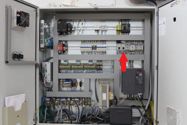
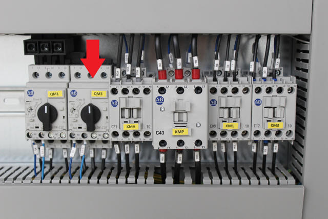
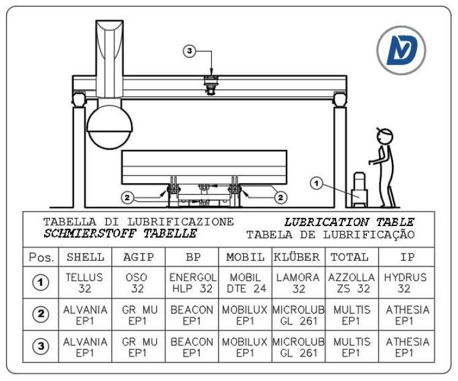

⚠️ Prima di procedere leggere attentamente le | |
⏲️ Descrizione: Interruttore termico pompa banco attivo | 🎚️ Gravità: ⭐⭐☆☆☆ |
🧑🏭 Figura autorizzata: Operatore macchina | 🧤 DPI previsti:  |
Descrizione
Anomalia sull'impianto di sollevamento banco; L'interruttore magnetotermico relativo al banco è scattato, esso offre una protezione sull'impianto sia ai cortocircuiti sia ai sovraccarichi. Per riarmare l'interruttore spostare il selettore a 0 e successivamente a 1;


Sintomi
…..
Possibili cause
Le cause possono essere suddivise in problemi Meccanici o Elettrici
Problemi meccanici:
Motore pompa olio bloccato, si può provare ad avviare la pompa del banco e vedere se effettivamente gira in caso di bloccaggio completo si cambia la pompa dell'olio;
L'olio all'interno del serbatoio è insufficiente;
L'olio all'interno del serbatoio è poco e molto sporco o il filtro è sporco;
Banco ribaltabile bloccato
Problemi elettrici:
Cortocircuito tra fasi motore;
Mancanza di una fase;
Cortocircuito avvolgimenti del motore;
Interruttore Guasto
Possibili soluzioni
Nelle foto sottostanti c'è la pompa con segnati i relativi punti di interesse;


MECCANICHE
Per prima cosa controllare che la ventolina di raffreddamento del motore giri libera, ovvero con un cacciavite per esempio provare a muovere la ventolina, se risulta bloccata la pompa si deve cambiare .
Controllare il livello dell'olio con una bacchetta pulita, e controllare se si hanno dei depositi sul fondo:
se il livello è basso rabboccare con Olio densità 32 e tenere periodicamente sotto occhio l'impianto se si svuota nuovamente poiché potrebbero esserci perdite;
se è presente molto sporco svuotare il serbatoio (c'è un tappo nel serbatoio) e pulirlo con il gasolio e successivamente riempirlo;
Controllare se gli snodi del pistone e gli snodi dei banchi non siano bloccati quindi successivamente ingrassare nei relativi punti.

ELETTRICHE
Controllare che non ci sia continuità tra le varie fasi; scollegare il cavo dalla scatola elettrica della pompa, isolare i terminali e riarmare l'interruttore attivare la pompa dell'olio se scatta il problema potrebbe essere il cavo;
Misurare la tensione in ingresso con un multimetro e verificare la presenza di tutte le fasi, se manca ad esempio una fase controllare che siano tirati tutti i morsetti;
Se effettuando la prova al punto 1 l'interruttore non scatta, collegare il cavo alla pompa, se, avviando la pompa l'interruttore scatta il problema è la pompa quindi sarà da sostituire;